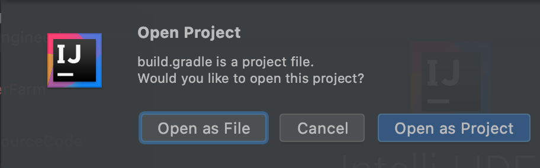
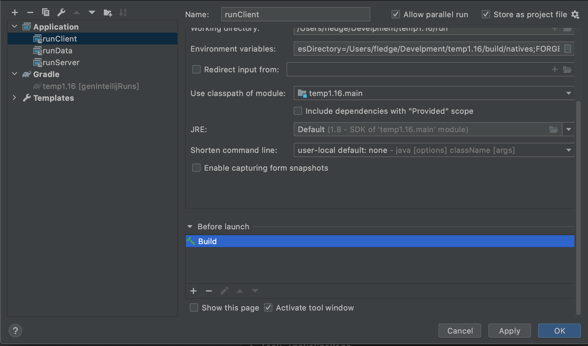
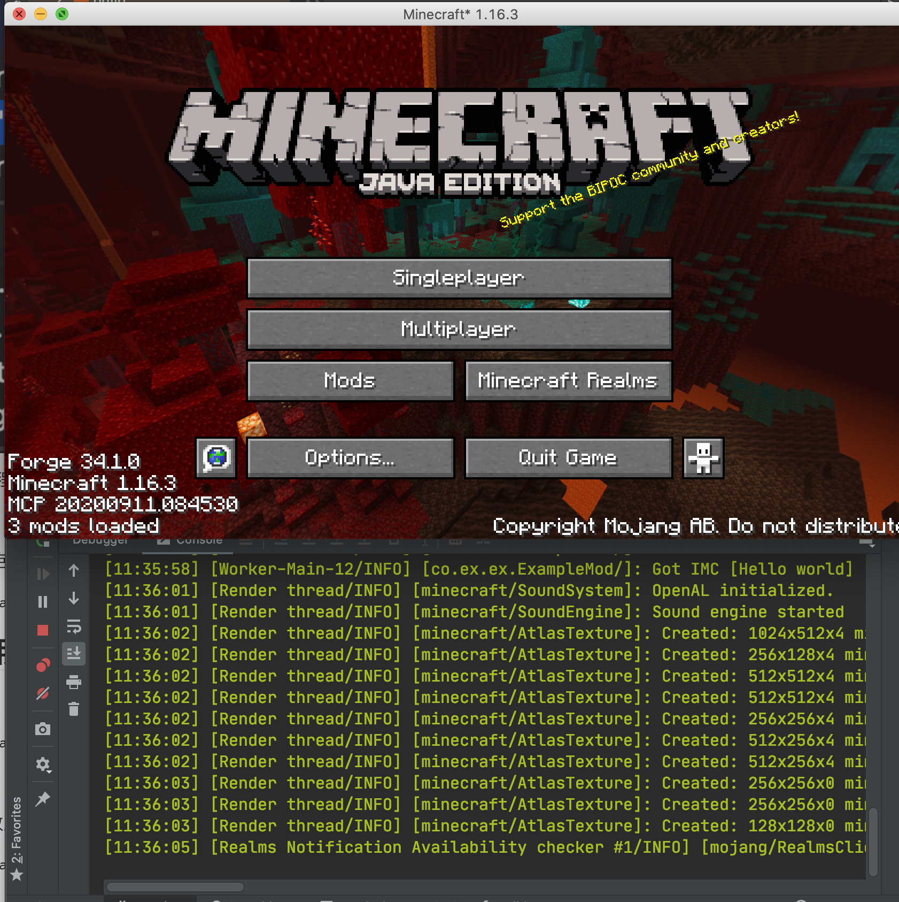
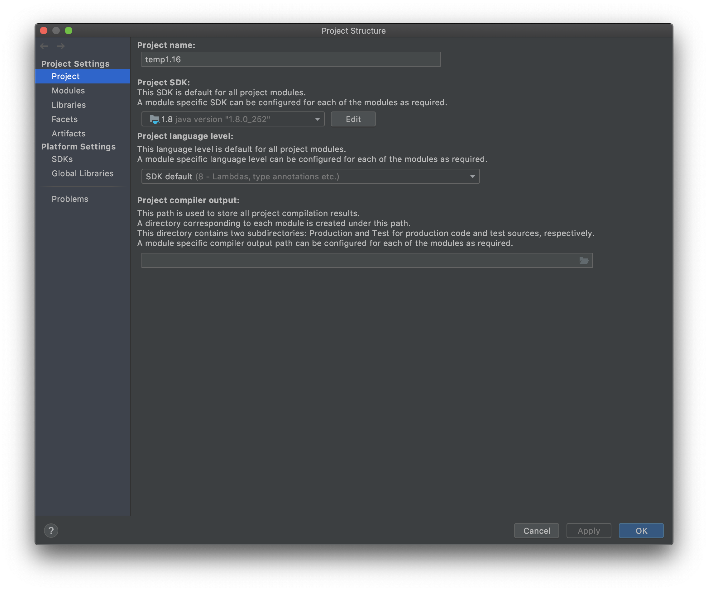
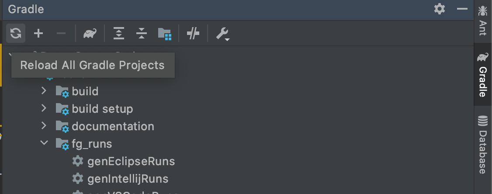
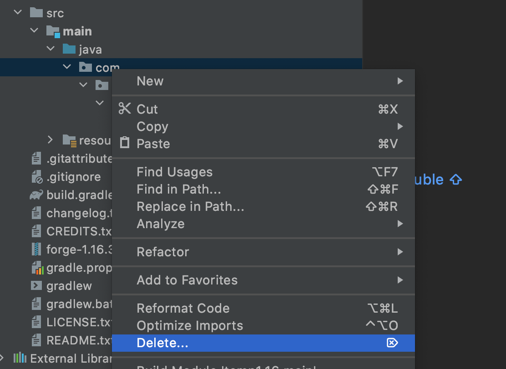
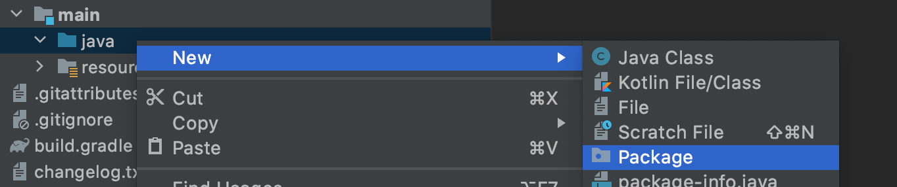
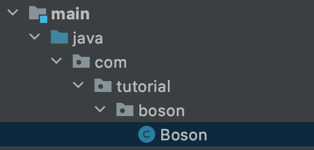
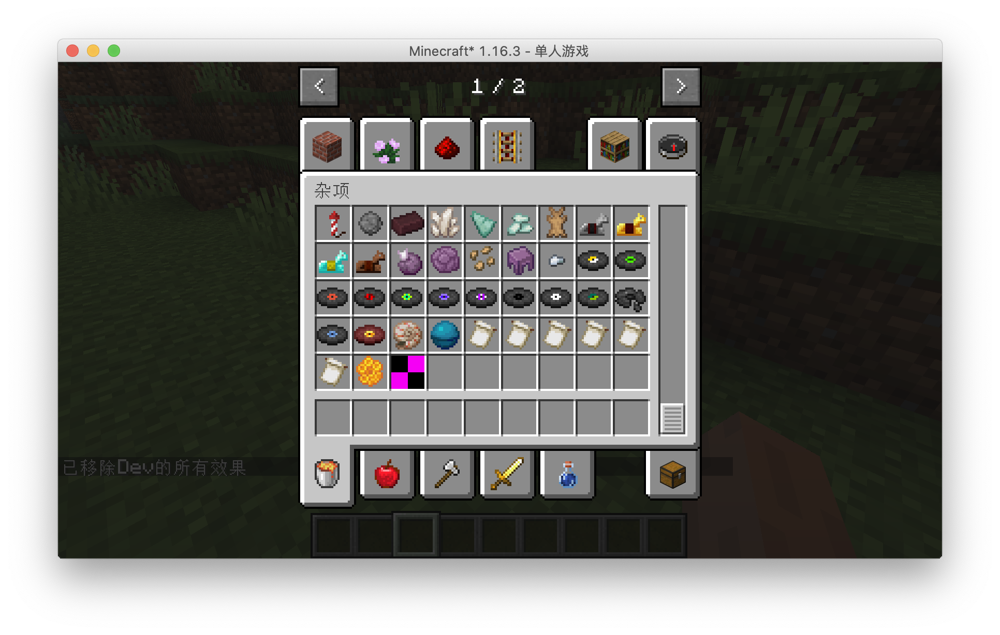

Introducation
I’m not a native English Speaker. So that, this tutorial may have a lot of grammar and words problem. If you find any problem please tell me.
If you have any question or feedback, welcome join my Discord Server .
License

This work is licensed under a Creative Commons Attribution-NonCommercial-NoDerivatives 4.0 International License.
What is Forge?
This tutorial is a mod development tutorial based on Forge, so it's natural to answer the question, "What is Forge?
At first glance, this doesn't seem like a question at all, “Forge? Isn't Forge just Forge?” The first thought that comes to your inner mind when you see this question is probably this.
But it's necessary to answer this question, and I'm going to talk a little bit about what Forge is, and the history of Forge. This may seem unrelated to our tutorial, but it is actually the "Lore" of mod development, and learning it will help you communicate with others better.
We have to start with Minecraft itself, but first we have to make it clear that Minecraft is a commercial software written in Java. This means two things: first, Minecraft is relatively easy to modify, and second, the code itself is not open source and is obfuscated. Early on in Minecraft's history, because Mojang never provided an official API1 for Minecraft, the "Mod Coder Pack" project was born (hereinafter referred to as MCP).
Remember what I said earlier about the two features of Minecraft that MCP uses to implement a set of tools that allow developers to modify the content of Minecraft jar packs directly?
So srg name, notch name and mcp name were born.
So what are these three?
The first is the notch name, which is a name that Minecraft has directly decompiled and obfuscated, and is usually a meaningless alphanumeric combination. You can tell from the name Notch that it comes directly from Minecraft (and the grudge against Notch), for example u is a typical notch name.
There is a example about notch name
public class cbw extends cbq {
public int u() {
return 0;
}
public int t() {
return 127;
}
}
Next is the srg name, which is a one-to-one correspondence with the notch name, and srg name will not change from one version to the next, the reason why it is called srg name(srg meas Searge) is to commemorate the leader of the MCP project, Searge. But there are corresponding prefixes and suffixes to distinguish them. Take the above u as an example, its srg name is func_214968_u.
public class NetherGenSettings extends GenerationSettings {
public int func_214968_u() {
return 0;
}
public int func_214967_t() {
return 127;
}
}
Finally, there's the mcp name, which is also the name we come across most in mod development, where the code is already readable. In mcp name, the code is already readable. It's the same as the names we use in our normal java programs. But the mcp name is subject to change. For example, the func_214968_u above has an mcp name of getBedrockFloorHeight. The class name in mcp name is the same as the class name in srg name.
public class NetherGenSettings extends GenerationSettings {
public int getBedrockFloorHeight() {
return 0;
}
public int getBedrockRoofHeight() {
return 127;
}
}
As time went on, mod developers realized that modding Jar files directly to write mods was too crude, and that mod-to-mod compatibility was virtually non-existent. So Forge was born.
Forge was actually a set of third-party APIs implemented by modifying the Minecraft way, and as time went on, MCP is now dead (some of MCP's tools are still alive). In addition to the Forge set of APIs, Fabric is also in the limelight, and Forge itself underwent a rewrite after Minecraft 1.13 arrived, introducing a number of APIs for functional programming.
So how did Forge use the three names we mentioned earlier?
After you install Forge, everything in the game will be decompiled into srg names to run, and your compiled mods will also be obfuscated into srg names to make sure it runs properly.
API (Application programming interface) is a mechanism provided by a program that allows a third party to modify or add functionality.
How minecraft works
This section is very important in that you must build up a model image of Minecraft running in your own brain, which will help you understand the concepts covered later.
In this section, I'll go over how Minecraft works in general, and a very important concept: the "sides".
Minecraft generally belongs to "C/S (Client/Server) Architecture". So what is "server" and what is "client"?
The name actually gives a general idea of what it means, the "server" is used to provide the service, and the "client" is used directly by the user. So how are these two sides represented in Minecraft?
In Minecraft the division of duties between the two sides is as follows.
-
server side
Responsible for the game's logic, reading and writing of data.
-
client side
It accepts input and output from the user and renders the game screen based on the data from the server.
It's worth noting that the distinction between client and server here is only logical. In fact if you are in single player mode, there will be both a server and a client on your computer, and they are in different threads1. But when you connect to a server, only the client exists on your computer and the server is moved to a remote server.
The following diagram roughly explains how Minecraft works.

When you see this picture, you may wonder why the client has a data model when the server is responsible for the game logic. In fact, the "client-side data model" here is just a copy of the "server-side data model", although they have separate game ticks and share a lot of the same code, but the final logic is still the server-side prevails.
As we mentioned before, the client and server are independent, but they inevitably need to synchronize data, and in Minecraft, all client and server data synchronization is done through network packets. In most of the cases, the original version has already implemented a method to synchronize the data, we just need to call the method that has already been implemented, but in some cases, the original version does not implement the corresponding function, or it is not suitable to use the function provided by the original version, we have to create and send network packets to complete the data synchronization.
So the next question is, how do we distinguish in our code whether we are on the client side or the server side?
Minecraft's World has an isRemote field, which is true when on the client and false when on the server.
Thread is one of the units of program scheduling, being in different threads means that the logic and data of these two are independent of each other and can only be synchronized by specific methods. Specifically, the server is in the "Server thread" and the client is in the "Render thread", if you've ever watched the output log when Minecraft starts, you should see these two words.
Development Model
In this section, we're going to talk about what the Minecraft mod development model looks like in rough terms, and understanding this model will help you understand what a lot of the actions in mod development are for.
In my opinion, Minecraft mod development basically follows the "event-driven model", and we won't go into detail about what the "event-driven model" is here, you just need to have an emotional understanding of it.
So what does Minecraft's "event-driven mode" look like? To answer this question, we need to clarify three concepts: "event", "bus" and "event handler".
What is an "event" in the first place? As the word implies, "event" means "something happened". For example, "When a block is broken" is an event, "When a player dies" is an event, but the examples are very specific, and events can be very abstract.
What is an "event handler" next? An event handler is a function used to handle "events". We can create an event handler to handle a “block destruction event", which reads "recreate a block", and we can register an event handler to handle a "player death event", which reads "place a tombstone".
When an bus occurs, the information of the event will be sent to the bus, and then the bus will select the event handler which has listened to the event and execute the event handler.

Note that the events and event handlers in this diagram are not in order.
There are two buses in Forge development, Mod bus and Forge bus. All initialization related events are in Mod bus and all other events are in Forge bus.
Core Conception
In this subsection, I will cover a few concepts that are not difficult to understand but are very important.
register
If you want to add some content to Minecraft, then one of the things you have to do is register. Registration is a mechanism that tells the game itself which things are available. The things you need to register can basically be broken down into two parts: a registration name and an instance.
ResourceLocation
You can think of ResourceLocation as a specially formatted string that looks something like this: minecraft:textures/block/stone.png, a ResouceLocation specifies a specific file under the resource bundle. For example, this ResourceLocation represents the material image of the stone in the original resource pack. There will be one or more domains. The second half of the colon corresponds one-to-one with the directory structure within the assets folder. In a way, ResourceLocation is a special URL.
Models and Textures
In the game 3d objects basically have their model, the model and textures together define the specific look of an object. The model is the equivalent of bones, and the material is the equivalent of skin. For the most part, your materials are png images, make sure your material background is opaque, and secondly don't use semi-transparent pixels in your materials, it can be unpredictable and problematic.
Development Environment
Setup Environment
需要的工具
- AdoptOpenJDK8-HotSpot For compatibility reasons, make sure you have JDK8 HotSpot installed.
- IntelliJ IDEA 2020 Community Edition, please install it yourself after the download is complete.
- Forge MDK 1.16.3 34.1.0, download and extract it to your favorite folder.
Overview
Minecraft Forge is a Gradle project, Gradle is a project builder tool, its main role is responsible for the project's dependency management, build and other functions. Dependency management refers to help you automatically download and configure the libraries you use in development, that is, the code written by others to facilitate your own development. Build refers to the mods you write into a package that others can install as a jar file.
Forge officially wrote a plug-in called ForgeGradle (henceforth referred to as FG) to take care of the configuration of the entire mod development environment.
Start Configuring
It is highly recommended to use the official launcher to start the 1.16.3 game once before starting the configuration to reduce network downloads during the environment configuration process and speed up the speed and success of the environment configuration.
First select Open or Import for the startup page.
Select the build.gradle in the directory where your MDK was extracted to open it.

Select as `Open As Project'

Once opened, it will take longer or shorter to import, depending on your network and your own computer.
When the import is complete, click the build panel at the bottom, and the green tick on the left side indicates the import was successful.
Before proceeding to the next step, I recommend adjusting IntelliJ's settings for Gradle to speed up the game launch afterwards.
Open the IntelliJ settings interface, find the Gradle tab, change the Build and using from Gradle to IntelliJ IDEA, and click Apply to save.

By default, MDK sets the logging level is debug level, the output of this logging level is too much, it is not convenient for us to view the logs in the development, it is recommended to adjust to info level.
Open your build.gradle file and change all property 'forge.logging.console.level', ‘debug’ to property 'forge.logging.console.level', ‘info’.
When you are done, click on the Gradle panel on the right side of the run, and select genIntelliJRuns under fg_runs in Tasks.
In this step, some of the remaining dependencies will be automatically downloaded, as well as Minecraft resource files. If you've launched the corresponding version of Minecraft with the official launcher before, this process will automatically copy the local cache, which will drastically reduce the download time. If you get an error during this process, basically just re-run genIntelliJRuns and it will fix it.
Similarly, when "Green Tick" is displayed on the left side, the configuration is successful.

Click Run=>Edit Configurations at the top.

Select the three items under Application and delete all tasks from Before Launch except Build.


Then select runClient to start the game.

You can see that our game started successfully, and if you've followed the tutorial before and adjusted Gradle's settings, it shouldn't be very slow.

To make it easier to create directories and sub-packages later, unselect "Compose Package" and "Compress Empty Middleware" as shown below.

JDK Common Errors
If you have multiple JDKs on your computer, it's possible that the JDK automatically selected by IntelliJ is wrong, making it impossible to import, and you'll need to manually modify the project's JDK and the JDK needed to run Gradle.
Select Porject Strucutre under File.

Changing the project JDK to version 1.8

Introduce Environment
In this section, I'll describe the series of files and folders generated by Mod development, and what they do.
The first and most important file is build.gradle, which is the configuration file for Gradle. It specifies how the Mod project is built, what dependencies it has, and how it is configured.
One of the minecraft closures is about the configuration of Forge Gradle.
The mappings channel: 'snapshot', version: '20200514-1.16 configuration specifies the version of the mappings file to be used in this project, and I strongly recommend that you update the mappings file frequently. So what is a mappings file? Do you remember the srg name and mcp name that we mentioned before? The purpose of the mapping file is to provide a translation between srg name and mcp name.
channel means the category of the mapping file, and in most cases you should use snapshot to make sure your mcp name is up to date. In most cases, you should use snapshot (snapshot version) to make sure your mcp name is up to date, and then version is the specific version, in most cases a higher version of the game is compatible with a lower version of mapping, although the version number should not be too far off. There are also two other parameters that are commented out, which we'll leave aside for now.
Another thing you might use is dependencies configuration, if your mod needs to depend on another java library or another mod, you need to add content here, the specific way to add, the comments have already given a detailed example, so I won't say more here. The minecraft 'net.minecraftforge:forge:1.16.3-34.1.0' specifies the Forge version you need to use, if you want to upgrade the Forge version, you can modify the content of this line, the format of the version is net.minecraftforge:forge:game_version-forge_version.
The rest of the file is just like a normal build.gradle, if you want to know more about it, we recommend to learn Gradle.
The next folder is the src folder, this is where we put our code and resource files, the main folder is where we run the code and files, and the test folder is where we put the test code. The main folder is where we put our code, and the resources folder is where we put our material models and other mods, except for the code.
This is basically a standard .minecraft folder. It's worth noting that because the development environment has both Minecraft client and server code, they both share the run directory.
The rest of the build directory is worth mentioning. When you run the build task in the Gradle panel, your mods will be packed up and placed under build=>libs.
All remaining folders and files with gradle in them are required for Gradle to run and configure, please do not delete them.
Customize Mod Info
From this section on we'll be officially writing our mod!
Updating Mappings
**Forge's Mapping system is in the process of migration, the content of the mapping file will be updated when the MMS system is released, the version we are currently using is 20200916-1.16.2 **
We need change mappings channel: 'snapshot', version: '20200514-1.16’ in build.gradle to mappings channel: 'snapshot', version: '20200916-1.16.2’。

Then click the re-import button in the right Gradle panel to re-import the project, because the build.gradle file is very important, please be careful not to correct it.

This process may involve downloading files (but not a lot), there is a chance of errors, check your build.gradle for errors, and try a few times.
Configuration
First we select all the directories and files in the java folder and then right-click to delete the default classes under the Java package.

Then right-click again to create a new package
By default your package name should be the backwards spelling of your domain name, because I don't want to use my own domain name as an example, so here I'm filling in com.tutorial.boson.



Right-click to create a Java class named Boson.

This Boson is the main class of our Mod.
Next, create a Utils class to hold some global constants.
The directory tree after creation is as follows.
java
└── com
└── tutorial
└── boson
├── Boson.java
└── Utils.java
Next let's go to the Utils class and define our modid, so what is your modId? modId is the unique identifier of your mod name, please note that modId and your mod name are not the same thing, it does not allow capital letters, nor spaces. The modId we've chosen here is boson.
public class Utils {
public static final String MOD_ID = "boson";
}
Then go to Boson and add a @Mod() comment to the top of the class name, add the modid we defined before. After that, we can add the following:
@Mod(Utils.MOD_ID)
public class Boson {
}
Next we need to modify mods.toml which is located under resources/META-INF. By default, IntelliJ does not syntactically highlight Toml files, so if you need syntax highlighting like I do, you can install the Toml plugin.
mods.toml is the configuration file for our mods, where we can modify the name, introduction, etc. of our mods. There are many configuration items, if a configuration item has #mandatory in the comment, it means it is required, if the injection is #optional, it means it is optional, you can add # in front of the configuration item to comment out the item.
Becasue the most readers of this verison of Boson are English speaker. You can understand comments. So just read the commnet to understand the function of configuration.
The rest are all dependencies, and Forge's official examples are clearly written, so we won't elaborate here.
The mods.toml I finished modifying is as follows:
modLoader="javafml"
loaderVersion="[34,)"
license="GNU GPLv3"
[[mods]]
modId="boson"
version="${file.jarVersion}"
displayName="Boson"
authors="FledgeShiu"
description='''
This is Boson, the 1.16 Modding tutorial example mod.
'''
Now that we've finished modding our mod info, let's open the game.

You can see that our Mod has appeared!
Item
First Item
From now on we will officially start writing code. First of all, a few things to say, the project's code will be open source, each section of the code links I will put at the back of the article, and for the sake of later amendments and easy to view.
First we have to be clear about which steps are required to create an item. The answer is three steps: create your own item and inherit the class from the original item, instantiate the item, and finally register the item into the game.
Note that these steps above are generic, and many custom content additions follow them.
Once we know the above steps, let's start adding our first item, where we'll add an Obsidian Ingot.
First we need to create an item class and have that class inherit the original Item class.
public class ObsidianIngot extends Item {
public ObsidianIngot() {
super(new Properties().group(ItemGroup.MATERIALS));
}
}
The code for this class is very simple, with only one constructor.
The only thing worth mentioning here is new Properties().group(ItemGroup.MATERIALS), this Properties specifies some properties of the item, such as: whether it is food or not, or which item bar the item is in in creation mode.
Here we have created a Properties and called the group method and passed in ItemGroup. MATERIALS. This adds the item to the original Miscellaneous creation mode item field, but you don't have to call the group method.
Next we need to instantiate and register the item, which used to be two separate steps, but Forge has added a mechanism called DeferredRegister, which makes it very easy to register an item.
public class ItemRegistry {
public static final DeferredRegister<Item> ITEMS = DeferredRegister.create(ForgeRegistries.ITEMS, Utils.MOD_ID);
public static final RegistryObject<Item> obsidianIngot = ITEMS.register("obsidian_ingot", ObsidianIngot::new);
}
That's all there is to register, first we create a variable of type DeferredRegister<Item> named ITEMS, which is a generic type indicating that the thing we need to register is the item, and then by new DeferredRegister<>(ForgeRegistries.ITEMS Utils.MOD_ID); instantiates this class, which has two arguments ForgeRegistries.ITEMS representing the item we want to register, and the second argument filled in should be your modId. We've created our registrar, and the next step is to register our item.
Remember what I said before? You need two things to register, one is the "register name", and the other is the instance of the object you want to register, the two arguments in ITEMS.register correspond to these two things.
public static final RegistryObject<Item> obsidianIngot = ITEMS.register("obsidian_ingot", ObsidianIngot::new);
The first argument is very easy to understand, obsidian_ingot corresponds to the registration name, please note that the registration name here also do not use capital letters, because the second argument here needs a type is a Supplier, here we put directly on the ObsidianIngot class of the method of construction of the method reference on, if you are not familiar with this syntax, please first at least understand the Java8 functional programming related to the content.
You see, even though we didn't declare the variables explicitly, we still instantiated the class of our item when we registered it.
There's one last step left and we're ready to add items successfully.
@Mod(Utils.MOD_ID)
public class Neutrino {
public Neutrino() {
ItemRegistry.ITEMS.register(FMLJavaModLoadingContext.get().getModEventBus());
}
}
We have added a line of code to the build method of the Mod main class, FMLJavaModLoadingContext.get().getModEventBus(); which means get Mod bus, if you don't know what Mod bus is please scroll ahead. And ITEMS.register(FMLJavaModLoadingContext.get().getModEventBus()); means to register ITEMS into Mod bus. Why register ITEMS into the Mod bus? The reason is that DeferredRegister is based on an event system implementation.
At this point, the code needed to add the items we want to add has been written, so open the game and take a look.


The item is still ugly, but that's our first item.
Model and Texture
In the previous section we have successfully added the first item, which was of course ugly, but in this section we will add models and materials to it.
First create a folder under resources in the following directory.
resources
├── META-INF
│ └── mods.toml
├── assets
│ └── boson
│ ├── models
│ │ └── item
│ └── textures
│ └── item
└── pack.mcmeta
In fact, assets is a resources package that belongs to a mod. For the specific directory structure, readers can look for the current game version of the material package tutorial to learn.
Next let's add the model file, first create a JSON file with the same registration name as the item you added in models in item, in our case obsidian_ingot.json.
It reads as follows:
{
"parent": "item/generated",
"textures": {
"layer0": "boson:item/obsidian_ingot"
}
}
It's pretty simple here: "parent": "item/generated" specifies what the parent of this model is, and "layer0": "boson:item/obsidian_ingot" specifies the specific textures. boson: means this is under our own assets file, and item/obsidian_ingot means it's the image textures/item/obsidian_ingot.png.
You can read the detailed format of the model file yourself Wiki
Next, we place our texture file under textures/item/obsidian_ingot.png, please note that the ratio of the texture file is 1:1, and preferably no larger than 32x32 pixels.

The loading flow here is: the game first gets the corresponding model file according to your registration name, then load the corresponding material file through the textures in the model file.
The completed directory tree is created as follows:
resources
├── META-INF
│ └── mods.toml
├── assets
│ └── boson
│ ├── models
│ │ └── item
│ │ └── obsidian_ingot.json
│ └── textures
│ └── item
│ └── obsidian_ingot.png
└── pack.mcmeta
After launching the game you'll see we have the model and material items.
Modding Crush Course
A handy tool for making models of things like Blocks and others: BlockBench.
Item and ItemStack
Here, I want to talk about the distinction between Item and ItemStack. Let's start with ItemStack and think step by step about why they need to be distinguished.
As the name implies, ItemStack is an Item Stack. In fact, in the game, all the items in the item slots are individual ItemStacks.

For example, in this case, there are three ItemStacks.
But this begs the question, although one set of apples is different in number from the second set, that number doesn't actually affect their actual performance. They can also be eaten, and the effect of the reply is the same when eaten.
These are the same as Properties or Default Behavior, and the same logic should be extracted from them, which is called Item.
Again, there are only two kinds of Items here: apples and iron swords.
You can imagine that ItemStack is a wrapper for Item, which provides additional attributes such as quantity, NBT tags, etc.
It's worth noting here that just because ItemStack is zero, it doesn't mean it's null, so you have to use the isEmpty() method under ItemStack to determine if it's null.
ItemStack contains Item is actually the same instance, the reason is very simple, if it is not the same instance, it will pointlessly produce many of the same instance, for optimization purposes, of course, is appropriate to share an instance, which also means that you can useresult.getItem() == Items to detect which Item is stored in ItemStack.
Item Group
In this section, we'll look at how to create a creative tab of your own, very simply.
First create a class, let it inherit ItemGroup, ItemGroup on behalf of the creative bar, because we need to create a creative bar, naturally need to inherit it.
It reads as follows:
public class ObsidianGroup extends ItemGroup {
public ObsidianGroup() {
super("obsidian_group");
}
@Override
public ItemStack createIcon() {
return new ItemStack(ItemRegistry.obsidianIngot.get());
}
}
The first method is used to set the title name of the creative bar, and the second provides the icon for the creative bar. Here we have used Obsidian Ingot as the icon, please note that the return value type of this function is ItemStack, not Item.
Then we need to instantiate the class and create ModGroup.
public class ModGroup {
public static final ItemGroup itemGroup = new ObsidianGroup();
}
This is where we store instances of ItemGroup and its subclasses (such as ObsidianGroup, which we created earlier). Each instance here represents a creative bar in the game.
It's also very easy to call the creative tab after you've created it, let's take Obsidian Ingot for example.
public class ObsidianIngot extends Item {
public ObsidianIngot() {
super(new Properties().group(ModGroup.itemGroup));
}
}
At this point open the game our Obsidian Ingot should be in the designated creative tab .

Food
In this section we will add a new food to the Minecraft world: the Obsidian Apple, after eating this apple you can reply to hunger, but it will be poisoned. Contrary to what many people think, food is not a separate thing, it's just a special item for Minecraft.
Again, let's create a class that inherits Item.
public class ObsidianApple extends Item {
private static final Food food = (new Food.Builder())
.saturation(10)
.hunger(20)
.effect(() -> new EffectInstance(Effects.POISON, 3 * 20, 1), 1)
.build();
public ObsidianApple() {
super(new Properties().food(food).group(ItemGroup.FOOD));
}
}
We explain one line by one line.
We created a variable of type Food, which specifies some properties of this food, such as: saturation method sets the satiety level, hunger sets the hunger level to be restored, and effect method sets the potion effect that the food may have when eaten .Here we set the effect to Poisoning, with a duration of 60 ticks and potion level 1. The second parameter represents the likelihood of the effect triggering (think of the original raw chicken), here we set it to 1 for 100%.
Next up is the construction method, which I'm sure you're already familiar with.The only thing new is the .food(food) method, which indicates that the item is a food, and we ended up putting the item in the food creative tab.
Then we register our food under the name obsidian_apple:
public class ItemRegistry {
public static final DeferredRegister<Item> ITEMS = DeferredRegister.create(ForgeRegistries.ITEMS, Utils.MOD_ID);
public static final RegistryObject<Item> obsidianApple = ITEMS.register("obsidian_apple", ObsidianApple::new);
}
Then add the model obsdian_ingot.json:
{
"parent": "item/generated",
"textures": {
"layer0": "boson:item/obsidian_apple"
}
}
Then the textures obsidian_apple.png.

Take out your apples and try to eat them.

Sword
In this section, we'll explain how to create a new sword, and here we'll use the Obsidian Sword as an example.
First we have to create an ItemTier. The ItemTier is what we call tool levels, such as Diamond Level, Iron Level .
public enum ModItemTier implements IItemTier {
OBSIDIAN(3, 2000, 10.0F, 4.0F, 30, () -> {
return Ingredient.fromItems(ItemRegistry.obsidianIngot.get());
});
private final int harvestLevel;
private final int maxUses;
private final float efficiency;
private final float attackDamage;
private final int enchantability;
private final LazyValue<Ingredient> repairMaterial;
ModItemTier(int harvestLevelIn, int maxUsesIn, float efficiencyIn, float attackDamageIn, int enchantabilityIn, Supplier<Ingredient> repairMaterialIn) {
this.harvestLevel = harvestLevelIn;
this.maxUses = maxUsesIn;
this.efficiency = efficiencyIn;
this.attackDamage = attackDamageIn;
this.enchantability = enchantabilityIn;
this.repairMaterial = new LazyValue<>(repairMaterialIn);
}
@Override
public int getMaxUses() {
return this.maxUses;
}
@Override
public float getEfficiency() {
return this.efficiency;
}
@Override
public float getAttackDamage() {
return this.attackDamage;
}
@Override
public int getHarvestLevel() {
return this.harvestLevel;
}
@Override
public int getEnchantability() {
return this.enchantability;
}
@Override
public Ingredient getRepairMaterial() {
return this.repairMaterial.getValue();
}
}
Again, this may seem like an awful lot of content, but it's not as complicated as you might think.
Here we create a ModItemTier class and inherit the IItemTier interface, the reason is that the original net.minecraft.item.ItemTier is implemented in enum, we can't add anything to it ourselves, so we have to implement it ourselves, we basically just copy it here. The original implementation, with all the properties of the original, is also in this class, so you can refer to it.
As for the various methods in this enum, I'm not going to explain them here, but with the experience of several previous items, I'm sure the reader reading this will have the ability to guess the function's function by its name.
Similarly, we create an ObsidianSword, but this time the inheritance class is a little different, this time we directly inherit the original SwordItem class, if you look at the inheritance diagram, you can see that SwordItem is a subclass of Item.
Implementation:
public class ObsidianSword extends SwordItem {
public ObsidianSword() {
super(ModItemTier.OBSIDIAN, 3, -2.4F, new Item.Properties().group(ItemGroup.COMBAT));
}
}
Please also refer to the original implementation here for 3 and -2.4F, where all item registrations are in net.minecraft.item.Items.
Then register the item.
public static RegistryObject<Item> obsidianSword = ITEMS.register("obsidian_sword", ObsidianSword::new);
Adding model files.
{
"parent": "item/generated",
"textures": {
"layer0": "boson:item/obsidian_sword"
}
}
and textures:

Once you're done creating it, open the game and see.

Tools
In this section, we'll learn how to add a new tool, and here's an example of a new pickaxe.
Let us first observe the inheritance tree.

You can see that the original version has provided classes corresponding to 4 tools, and there is a ToolItem on top of these tools. If you want to create a new type of tool, you can choose to inherit and implement this class. Please refer to the original version for the implementation method 4 categories.
Next we begin to create the obsidian pickaxe
public class ObsidianPickaxe extends PickaxeItem {
public ObsidianPickaxe() {
super(ModItemTier.OBSIDIAN, 2, -3f, (new Item.Properties()).group(ModGroup.itemGroup));
}
}
As you can see, here we choose to directly inherit the PickaxeItem class, and then pass directly we create a good obsidian ItemTier, the rest of the parameters, please refer to the original implementation.
And then there's registration.
public static final RegistryObject<Item> obsidianPickaxe = ITEMS.register("obsidian_pickaxe", ObsidianPickaxe::new);
Adding textures and models is not something I'll go into here.
Open up the game and take a look, and you should be able to see the brand new Obsidian pickaxe.

Armor
In this section, we'll come to learn how to add a set of Armor, and here we'll use Obsidian Armor as an example.
As with tools and weapons, equipment has its own class, IArmorMaterial, and here we'll follow the original version and implement this interface with an Enum.
public enum ModArmorMaterial implements IArmorMaterial {
OBSIDIAN("obsidian", 40, new int[]{5, 8, 10, 5}, 20, SoundEvents.ITEM_ARMOR_EQUIP_DIAMOND, 2.0F, 0.0F, () -> {
return Ingredient.fromItems(ItemRegistry.obsidianIngot.get());
});
private static final int[] MAX_DAMAGE_ARRAY = new int[]{13, 15, 16, 11};
private final String name;
private final int maxDamageFactor;
private final int[] damageReductionAmountArray;
private final int enchantability;
private final SoundEvent soundEvent;
private final float toughness;
private final float knockbackResistance;
private final LazyValue<Ingredient> repairMaterial;
ModArmorMaterial(String name, int maxDamageFactor, int[] damageReductionAmountArray, int enchantability, SoundEvent soundEvent, float toughness, float knockbackResistance, Supplier<Ingredient> repairMaterial) {
this.name = name;
this.maxDamageFactor = maxDamageFactor;
this.damageReductionAmountArray = damageReductionAmountArray;
this.enchantability = enchantability;
this.soundEvent = soundEvent;
this.toughness = toughness;
this.knockbackResistance = knockbackResistance;
this.repairMaterial = new LazyValue<>(repairMaterial);
}
public int getDurability(EquipmentSlotType slotIn) {
return MAX_DAMAGE_ARRAY[slotIn.getIndex()] * this.maxDamageFactor;
}
public int getDamageReductionAmount(EquipmentSlotType slotIn) {
return this.damageReductionAmountArray[slotIn.getIndex()];
}
public int getEnchantability() {
return this.enchantability;
}
public SoundEvent getSoundEvent() {
return this.soundEvent;
}
public Ingredient getRepairMaterial() {
return this.repairMaterial.getValue();
}
@OnlyIn(Dist.CLIENT)
public String getName() {
return this.name;
}
public float getToughness() {
return this.toughness;
}
public float getKnockbackResistance() {
return this.knockbackResistance;
}
}
Note the name here, which relates to the textures we'll be creating the player to wear on his body.
public static final RegistryObject<Item> obsidianHelmet = ITEMS.register("obsidian_helmet", () -> new ArmorItem(ModArmorMaterial.OBSIDIAN, EquipmentSlotType.HEAD, (new Item.Properties()).group(ModGroup.itemGroup)));
public static final RegistryObject<Item> obsidianChestplate = ITEMS.register("obsidian_chestplate", () -> new ArmorItem(ModArmorMaterial.OBSIDIAN, EquipmentSlotType.CHEST, (new Item.Properties()).group(ModGroup.itemGroup)));
public static final RegistryObject<Item> obsidianLeggings = ITEMS.register("obsidian_leggings", () -> new ArmorItem(ModArmorMaterial.OBSIDIAN, EquipmentSlotType.LEGS, (new Item.Properties()).group(ModGroup.itemGroup)));
public static final RegistryObject<Item> obsidianBoots = ITEMS.register("obsidian_boots", () -> new ArmorItem(ModArmorMaterial.OBSIDIAN, EquipmentSlotType.FEET, (new Item.Properties()).group(ModGroup.itemGroup)));
You can see that the first parameter of ArmorItem specifies the class corresponding to the armor, and the second parameter specifies the position where the armor is worn.
The next step is the addition of materials and textures for the items, which I won't explain here.
But armor has an extra wearable textures compared to other items, which needs to be added, because Minecraft hard codes all wearable armor textures under the minecraft domain, so we have to create the corresponding directory, which will look like this when it's finished.
resources
├── META-INF
│ └── mods.toml
├── assets
│ ├── boson
│ └── minecraft
│ └── textures
│ └── models
│ └── armor
└── pack.mcmeta
As you can see, we've created minecraft and a corresponding folder for armor materials in the same folder as boson.
接下来我们得放入我们盔甲的材质。材质有两张，命名格式为：盔甲材料_layer_1和盔甲材料_layer_2。在我们这里就是obsidian_layer_1和obsidian_layer_2。
Next we have to put in our armor material. There are two materials, named in the format armro-texture_layer_1 and armro-texture_layer_2. In our case it's obsidian_layer_1 and obsidian_layer_2.

Note that the two textures contain a set of armor.
The directory after the textures is put in is as follows.
resources
├── META-INF
│ └── mods.toml
├── assets
│ ├── boson
│ └── minecraft
│ └── textures
│ └── models
│ └── armor
│ ├── obsidian_layer_1.png
│ └── obsidian_layer_2.png
└── pack.mcmeta
Open the game and you should see a brand new suit of armor.
Localization
In this section, we will learn how to add names to our items.
In the previous chapters, the names of the items we created looked like a string of meaningless characters. In this section we will add a meaningful name to them.
In Minecraft, the name of the file is provided in the form of a language file. In the higher version, the language file is a json file. Its approximate content is as follows:
{
"language.name": "English",
"language.region": "United States",
"language.code": "en_us",
"narrator.button.accessibility": "Accessibility",
"narrator.button.language": "Language"
}
You can see that a language file is actually a "key-value pair", where the "key" is an in-game number, and the "value" is the specific translation. The reason for this is that Minecraft has to support languages of many countries and regions. If each language is directly hardcoded into the game, it is obviously not maintainable. By default, if you do not add a corresponding translation to the object that needs to be translated in the game, then it will display the "key" of this translation by default.
Take our Obsidian Ingot for example:

We haven't added a name to it yet. The item.neutrino.obsidian_ingot it displays is the default key value. Of course, you can also customize the key value. There are corresponding methods in the Item class to achieve this. As I said before, in the Minecraft source code and the function name guessing function is a necessary ability for Mod development, so here It is equivalent to a small test, please find a way to modify this key by yourself.
But in some cases, the game cannot automatically add keys to my content by default. At this time, we have to create a key by ourselves. Minecraft provides a method called I18n.format for me to create it by myself. For the specific usage, we I will talk about it later.
Let me create the language file.
First, create a folder called lang under the boson folder. After the creation is successful, the directory tree is as follows:
resources
├── META-INF
│ └── mods.toml
├── assets
│ └── boson
│ ├── lang
│ ├── models
│ │ └── item
│ │ ├── obsidian_apple.json
│ │ ├── obsidian_ingot.json
│ │ └── obsidian_sword.json
│ └── textures
│ └── item
│ ├── obsidian_apple.png
│ ├── obsidian_ingot.png
│ └── obsidian_sword.png
└── pack.mcmeta
Here we take English as an example.
First create a file called en_us with the following content.
{
"item.neutrino.obsidian_ingot": "Obsidian Ingot",
"item.neutrino.obsidian_apple":"Obsidian Apple",
"item.neutrino.obsidian_sword":"Obsidian Sword",
"itemGroup.obsidian_group": "Obsidian Tab"
}
Then start the game, adjust to simplified Chinese, you should be able to see our items are translated.

A list of all available language files can be found in the Wiki’s Language#Available languages.